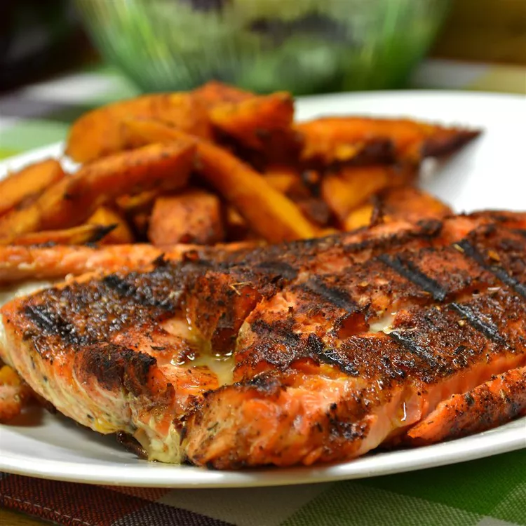

Blackened Salmon Fillets

Description
Salmon tends to be rather a large fish and you may want to ask your
fishmonger for handy sized fillets for easy preparation and
portioning. You will need between 150-200g per portion, depending on
how hungry you are
Salmon fillets should be firm to the touch and show no signs of
greying flesh. Buy sustainably if possible. Unlike salmon steaks,
which have a small circular bone in the centre, fillets are usually
boneless, though you can find the odd pin bone so be sure to check
before cooking.
Ingredients:
- 2 tablespoons ground paprika
- 1 tablespoon ground cayenne pepper
- 1 tablespoon onion powder
- 2 teaspoons salt
- ½ teaspoon ground white pepper
- ½ teaspoon ground black pepper
- ¼ teaspoon dried thyme
- ¼ teaspoon dried basil
- ¼ teaspoon dried oregano
- 4 salmon fillets, skin and bones removed
- ½ cup unsalted butter, melted
Steps:
-
Mix paprika, cayenne pepper, onion powder, salt, white and black
pepper, thyme, basil, and oregano together in a small bowl.
-
Brush salmon fillets on both sides with 1/4 cup butter, and
sprinkle evenly with the spice mixture.
-
Heat 2 tablespoons melted butter in a large, heavy skillet over
high heat. Add salmon and cook until blackened, 2 to 5 minutes.
Lift fillets, add remaining melted butter to the skillet, and
flip fillets into the butter. Cook until the other side is
blackened and fish flakes easily with a fork, 3 to 5 minutes.
Homepage